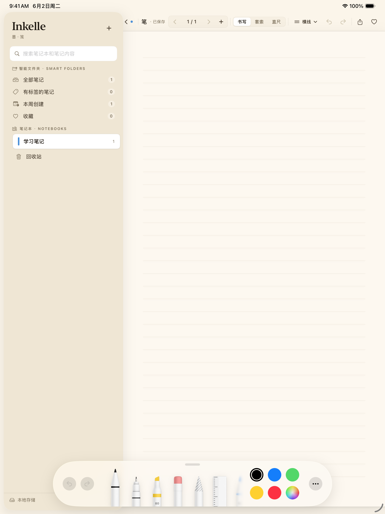

从课堂到书房，Inkelle 把纸质笔记本的自由和数字工具的能力放进同一页纸。
压感笔锋、防误触、笔类预设随手切换。为 Apple Pencil 深度优化，用手指也能流畅书写。
八种纸张模板，A4 与 Letter、横竖任选，页面缩略图一目了然。
OCR 把每一页手写变成可检索的文字，结果直达那一页。
导入即写，批注与原文件平整合一导出。
LaTeX 公式离线渲染；套索选中笔迹，移动、缩放、旋转、换色。
回放录音时，当时写下的笔迹同步重现；课堂与会议，从此可以回到现场。还支持离线转写成文字。
隐私优先
总结、测验、抽认卡，AI 学习套件让笔记变成知识。它默认完全关闭，钥匙在你手里。
笔记保存在你的设备和你的 iCloud 私有容器里，开发者无法读取。无需注册任何账号。
使用你自己的 DeepSeek API 密钥。在你填入密钥并明确同意之前，不会发送任何笔记内容。
所有笔记随时可以完整导出为 PDF、纯文本或 Markdown，不绑架任何数据。
不需要。Inkelle 没有任何账号体系，打开就能用；多设备同步走你自己的 iCloud。
不必须。Apple Pencil 体验最佳，但手指书写同样完整可用，所有功能都不依赖 Pencil。
AI 学习套件是可选功能，使用你自己的 DeepSeek API 密钥。在填入密钥并明确同意前，应用不会向 DeepSeek 发送任何内容。
Inkelle 专为 iPad 打造，需要 iPadOS 17 或更高版本。